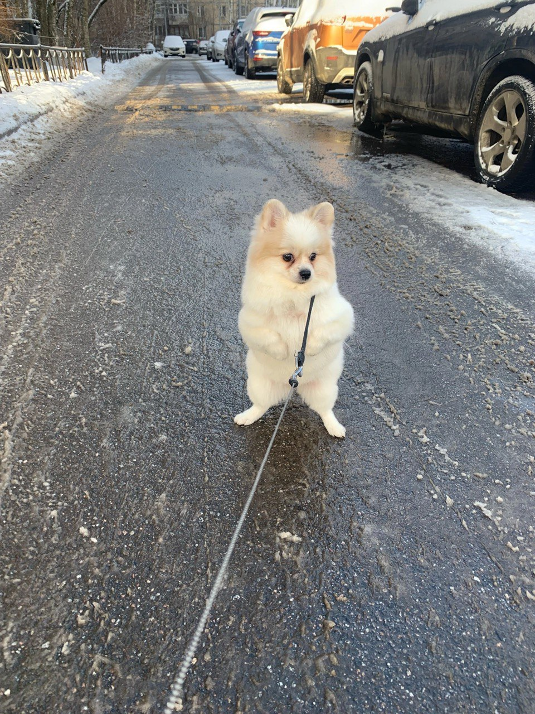

Собака - это четвероногое животное, родственники диких волков. Много-много лет назад человек
приручил собаку, чтобы та защищала его, охраняла дом, скотт... Соврменные люди тоже заводят
собак, но не только как охранника и помощника, но и просто как друга